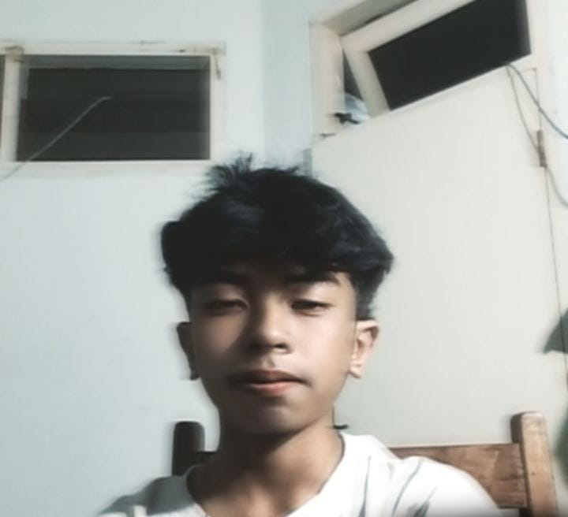
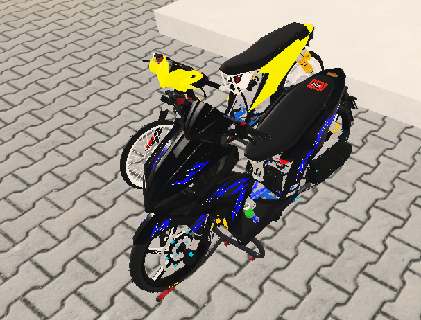
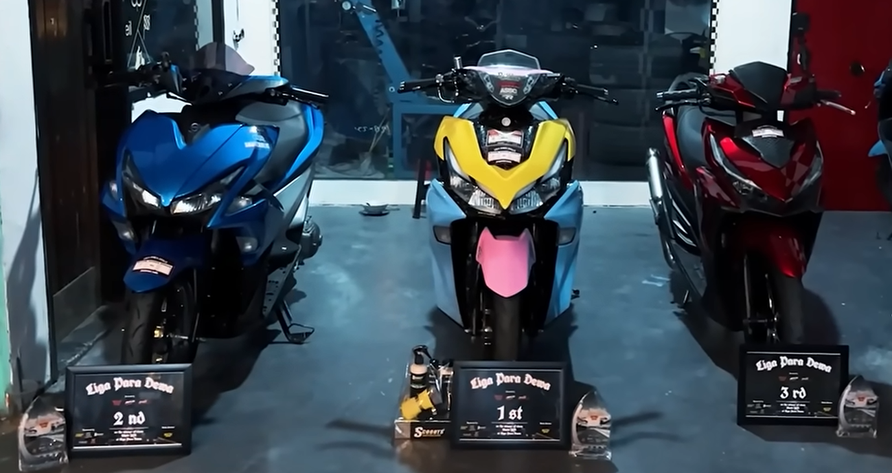
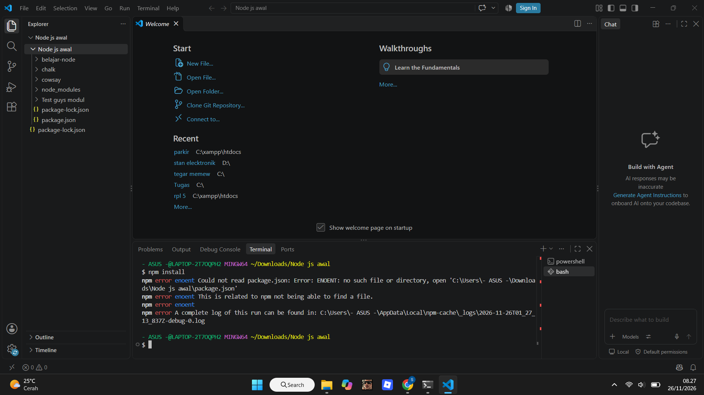
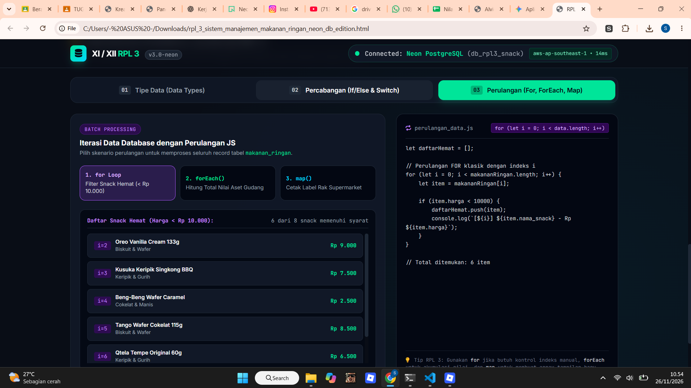

Pengembangan Web
Mempelajari cara membangun dan mengembangkan website.
PPLGPORTOFOLIO PRIBADI
Siswa PPLG yang tertarik pada dunia teknologi, pengembangan web, dan kreativitas digital. Saya senang belajar hal baru dan mengubah ide menjadi karya.

01 / TENTANG SAYA
Saya bersekolah di SMK Negeri 5 Malang dan mengambil jurusan Pengembangan Perangkat Lunak dan Gim (PPLG).
Saya memiliki rasa ingin tahu yang besar terhadap teknologi dan senang mengeksplorasi hal-hal baru. Di luar kegiatan belajar, saya juga menyukai dunia otomotif, terutama memodifikasi sepeda motor.
02 / MINAT & KEAHLIAN
Saya terus mengembangkan kemampuan melalui latihan, eksplorasi, dan pengalaman baru.
Mempelajari cara membangun dan mengembangkan website.
PPLGSenang mengeksplorasi tampilan, ide, dan pengalaman digital.
CreativeMemiliki minat pada modifikasi dan dunia sepeda motor.
Personal interest03 / AKTIVITAS SAYA
Beberapa hal yang saya sukai dan pengalaman yang menjadi bagian dari perjalanan saya.

01 — GAMINGSaya suka bermain Roblox, khususnya game Drag Drive Project yang menghadirkan pengalaman otomotif virtual.

02 — ACHIEVEMENTSalah satu pengalaman berkesan adalah mengikuti kompetisi Liga FFA dan berhasil meraih juara ketiga.

03 — tugasSalah tugas rpl 3 js dan node js.

03 — tugasSalah tugas rpl 3 js gui.
04 / KONTAK
Terima kasih sudah mengunjungi portofolio saya. Silakan hubungi saya melalui Instagram.
@alvinrahmandikri